Informatica
Programmazione: studio e sviluppo di programmi, applicazioni web, basi di dati.
articolazione Informatica
I.S. Archimede · Treviglio (BG)
Cinque anni per diventare un tecnico capace di progettare, sviluppare e gestire sistemi informatici, reti e applicazioni web.
Applicazioni desktop, web e mobile
Progettazione e interrogazione SQL
Installazione e gestione di LAN e servizi
Protezione dei dati e privacy
Siti, servizi e architetture online
Approccio razionale al problem solving
Gestione condivisa dei progetti
Lessico ICT per contesti internazionali
| Materia | 1a | 2a |
|---|---|---|
| Tecnologie informatiche | 3 | – |
| Scienze e tecnologie applicate | – | 3 |
| Totale | 3 | 3 |
Solo le materie d'indirizzo ·
gran parte delle ore si svolge in laboratorio.
Programmazione: studio e sviluppo di programmi, applicazioni web, basi di dati.
Studio, gestione e progettazione di infrastrutture di rete.
Creazione e analisi di circuiti, segnali, gestione della trasmissione dati.
Progettazione di sistemi informatici e di telecomunicazioni.
Gestione progetto e organizzazione d'impresa: economia aziendale e conduzione di progetti.
ITS Angelo Rizzoli — Milano & Kilometro Rosso (BG)
Il diploma dà accesso a tutte le facoltà.
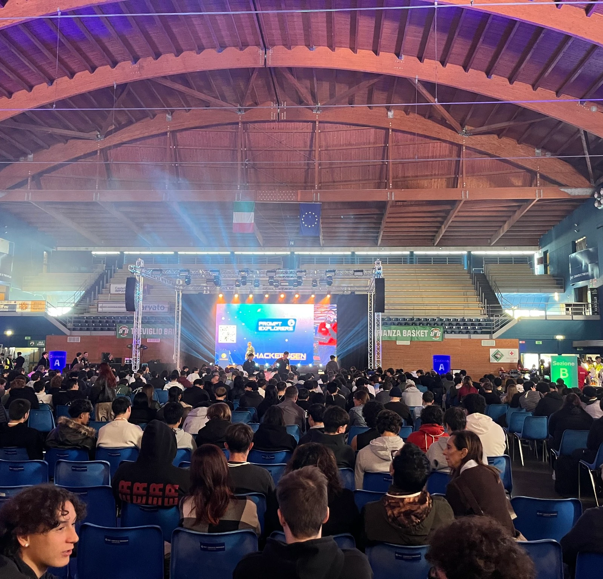
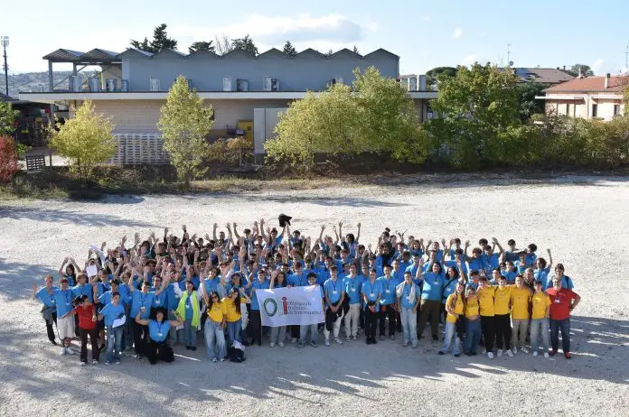
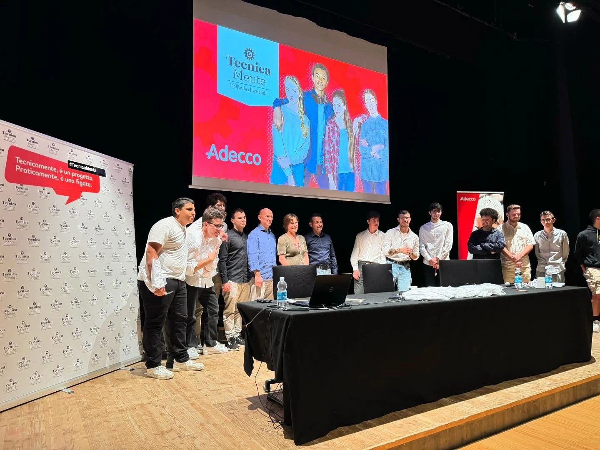
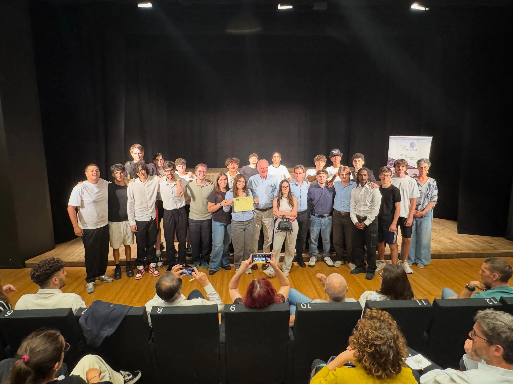
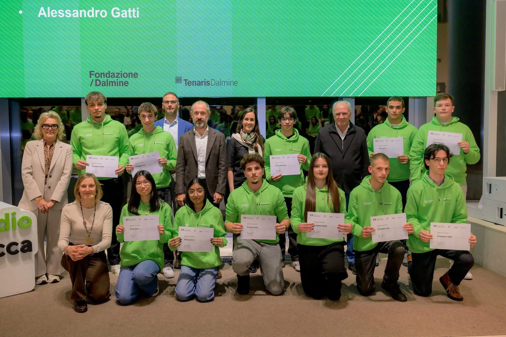
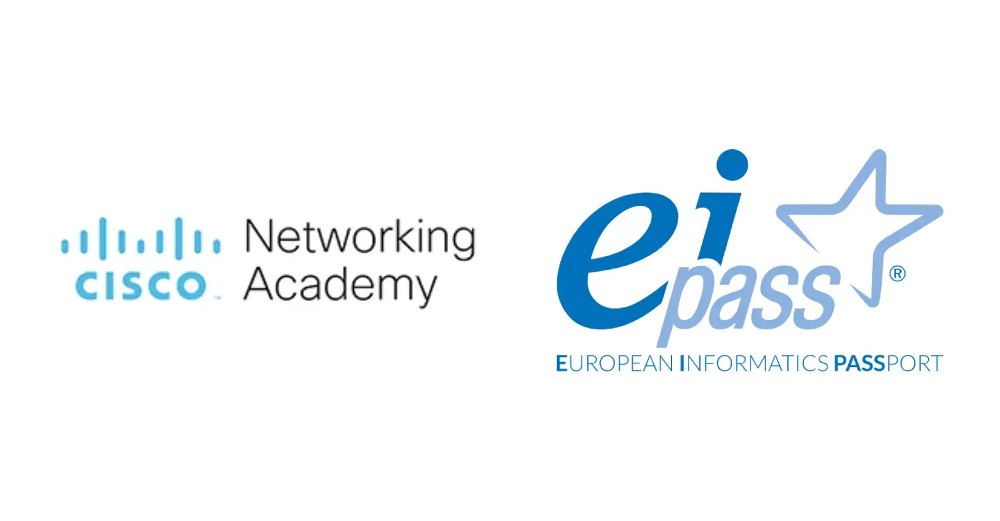
Stage in azienda, visite e incontri con professionisti: la scuola che incontra il lavoro già dal terzo anno.

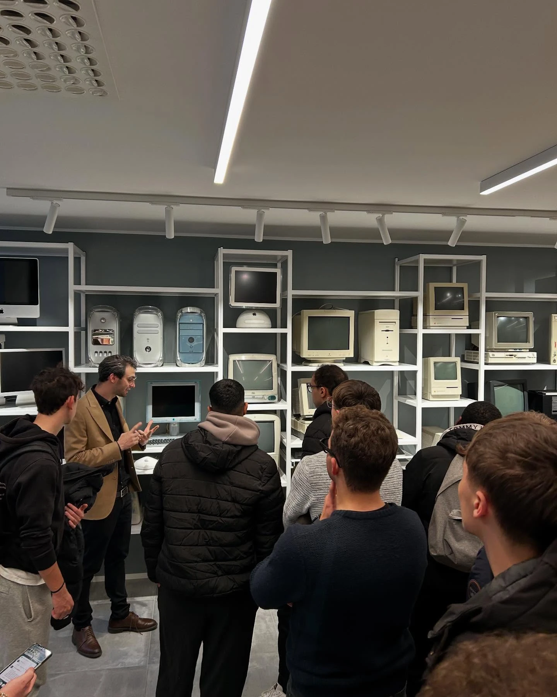
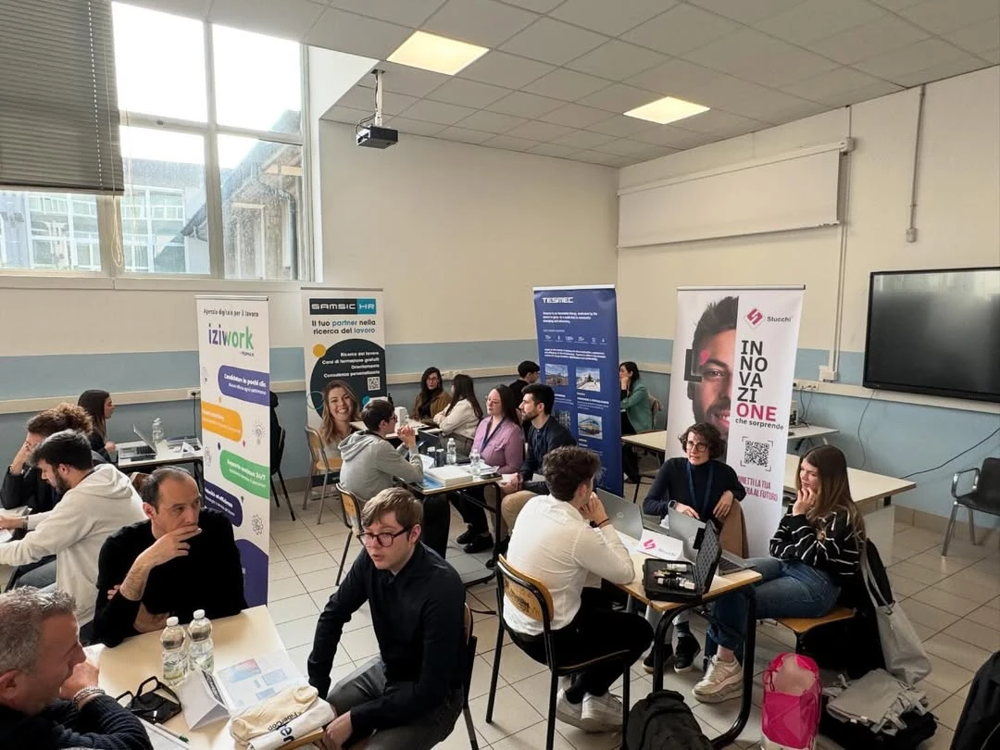
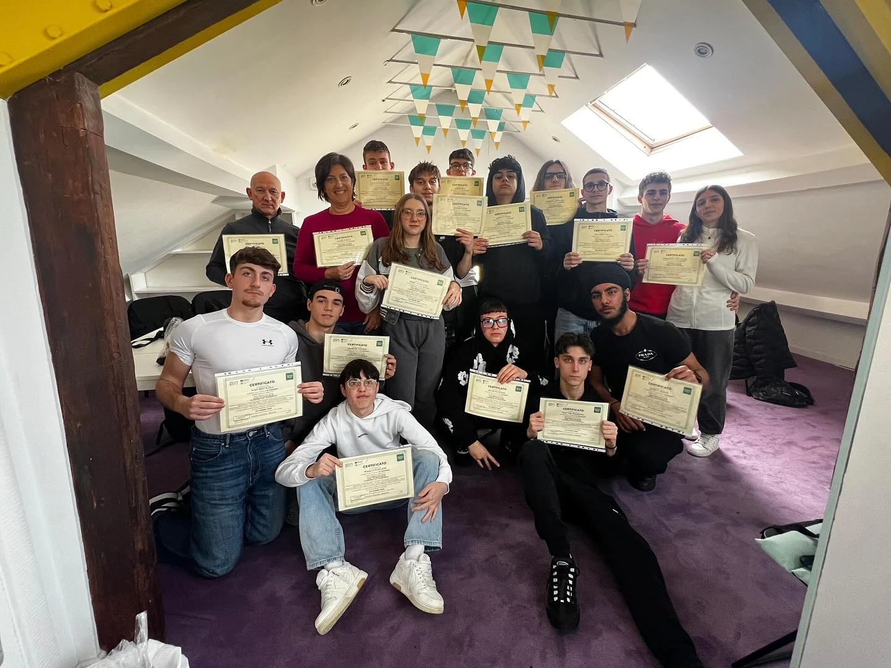
Stage, progetti e visite nascono dalla collaborazione con le realtà del territorio.
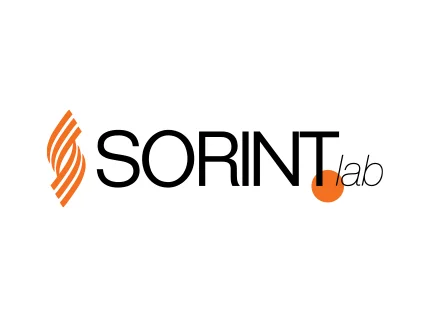
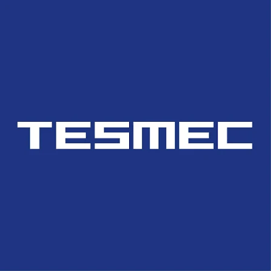
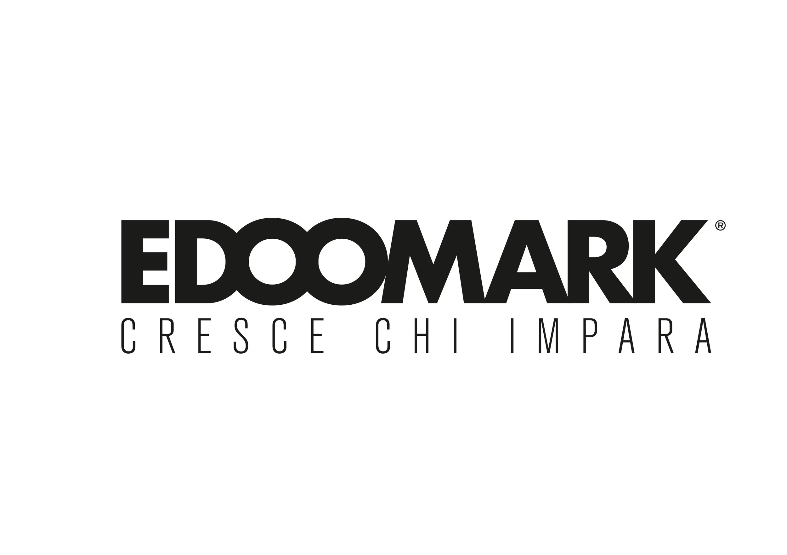
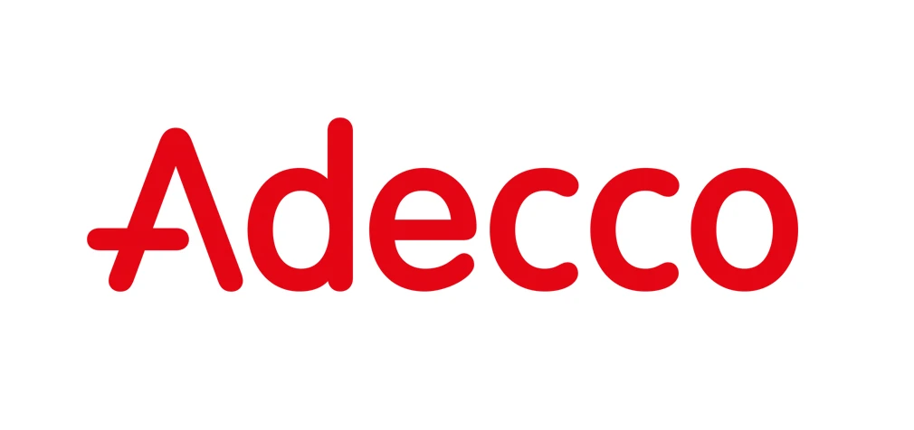
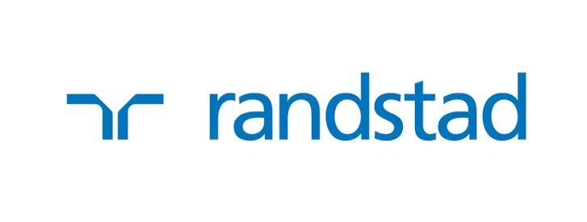
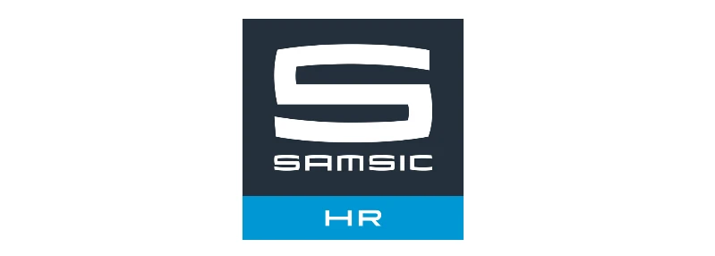
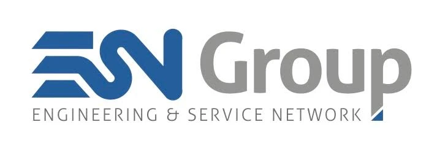
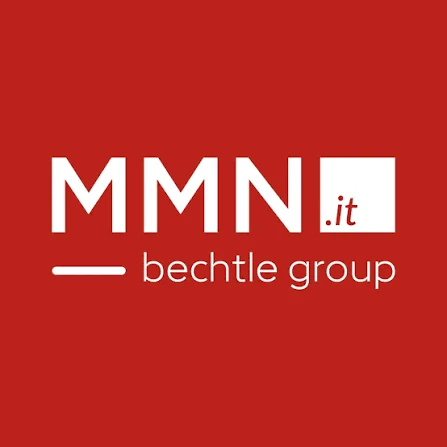
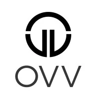
… e molte altre aziende.
Vi presentano i loro progetti —
la messa in pratica di ciò che si impara qui.